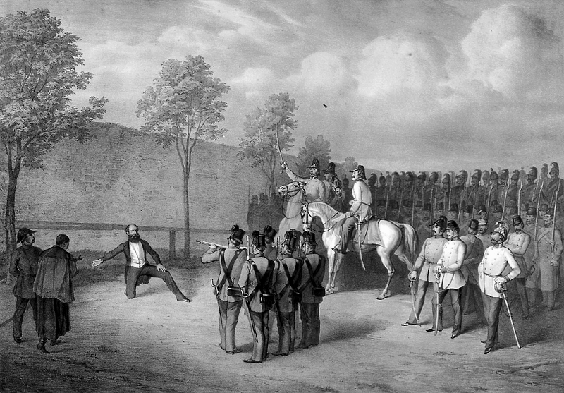
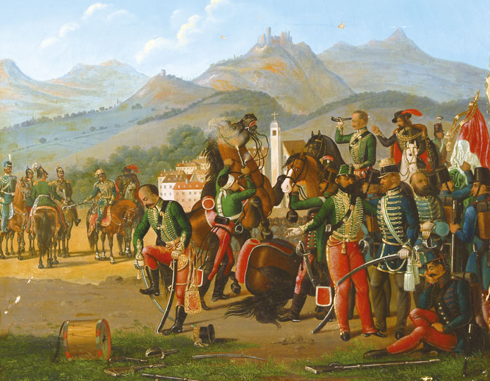
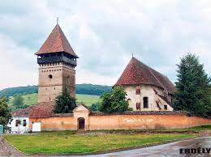

Források
Leadás
Nemzeti Gyásznap
Kvíz az aradi vértanúk emléknapjára
Mi a neved?
Melyik osztályba jársz?
9.Akny
9.Bkny
9.Ckny
9.Ekny
9.A
9.B
9.C
9.D
9.E
10.A
10.B
10.C
10.D
10.E
11.A
11.B
11.C
11.D
11.E
11.IB
12.A
12.B
12.C
12.D
12.E
12.IB
1.feladat
Batthyány Lajos

Batthyány Lajos volt Magyarország első, felelős, alkotmányos miniszterelnöke. Október 6-án az aradi 13 vértanúval egyidőben, Pesten végezték ki. Ítélete kötél általi halál lett volna, ám az utolsó pillanatban golyó által végezték ki.
2.feladat
Az aradi vértanúk
A legfiatalabb vértanú volt, egyben a legmagasabb is. Kivégzés előtti utolsó mondata: „A világ feleszmél majd, ha látja a hóhérok munkáját."
A 13 vértanú többségét szeptember 26.-án ítélték halálra. Vécsey Károlyt és egy honvédtiszttársát viszont külön perben, már szeptember 21.-én elítélték.
Az 54. születésnapján várt rá a kivégzés. A “Magyar Golgota” című film viseli az emlékét.
Utolsó vértanú, akin az ítéletet végrehajtották, ezért végig kellett néznie a többiek kínhalálát.
3.feladat
A “Világosi” fegyverletétel

A világosi fegyverletétel jelentette az 1848-49-es forradalom és szabadságharc végét, amit véres megtorlás követett az osztrák Haynau rémuralma alatt. Az elnevezésével ellentétben azonban nem Világoson tették le a fegyvert a csapatok.
4.feladat
Képfelismerés

Quiz leadása